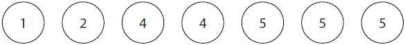
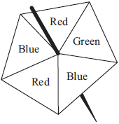
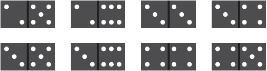
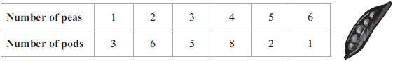
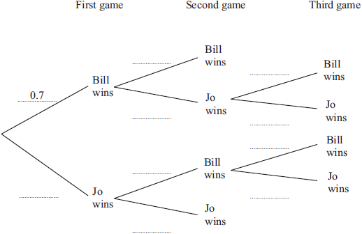
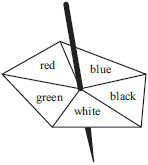

1
Every morning, Samath has one glass of fruit juice with his breakfast.
He chooses at random orange juice or pineapple juice or mango juice.
The probability that he chooses orange juice is 0.6
The probability that he chooses pineapple juice is 0.3
(a)
Work out the probability that he chooses mango juice.
(2)
(b)
There are 30 days in April.
Work out an estimate for the number of days in April on which Samath chooses orange juice.
(2)
2
Here are seven counters.
Each counter has a number on it.

Ali puts the seven counters in a bag.
He takes, at random, a counter from the bag and does not replace the counter.
He then takes, at random, a second counter from the bag.
Calculate the probability that
(i)
the number on the second counter is 2 more than the number on the first counter,
(2)
(ii)
the number on the second counter is 1 more than the number on the first counter.
(3)
3
John throws a biased coin 120 times.
It shows heads 90 times.
(a)
John throws the coin once more.
Work out an estimate for the probability that the coin shows tails.
(2)
Carly throws the same coin 200 times.
(b)
Work out an estimate for the number of times the coin shows tails.
(2)
4
Alan has to attend a meeting on Monday and on Tuesday.
The probability that he is late for a meeting is \(\displaystyle \frac{1}{8}\)
(a)
Complete the probability tree diagram.

(3)
(b)
Calculate the probability that Alan is late for at least one of these meetings.
(3)
5
Here is a fair 5-sided spinner.

Hans spins the spinner 30 times.
Work out an estimate for the number of times the spinner lands on Red.
(2)
6
A bag contains 60 beads.
\(x\) of the beads are red and the rest are green.
Altaaf takes at random a bead from the bag.
(a)
State, in terms of \(x\), the probability that Altaaf takes a red bead.
(1)
Altaaf puts his bead back in the bag.
Another 20 red beads are added to those in the bag.
The probability that Altaaf takes a red bead is now doubled.
(b)
(i)
Use this information to write down an equation in \(x\)
and show that your equation can be expressed as \(8x = 3(x + 20)\)
(3)
(ii)
Solve \(\quad 8x = 3(x + 20)\)
Show your working clearly.
(2)
7
Here are 8 dominoes.

The 8 dominoes are put in a bag.
Riaz takes at random a domino from the bag.
(a)
Find the probability that he takes a domino with a total of 8 spots or a domino with a total of 9 spots.
(2)
Helima takes at random 2 dominoes from the bag of 8 dominoes without replacement.
(b)
Work out the probability that
(i)
the total number of spots on the two dominoes is 18
(2)
(ii)
the total number of spots on the two dominoes is 17
(3)
8
The table shows information about the number of peas in each of 25 pods.

(a)
Tariq puts the 25 pods in a bag.
He takes at random one of the pods.
Find the probability that he takes a pod with 3 peas or a pod with 4 peas.
(2)
(b)
Laila puts the 25 pods in a bag.
She takes at random two pods without replacement.
Calculate the probability that
(i)
there are 3 peas in each of the two pods she takes,
(2)
(ii)
there is a total of 4 peas in the two pods she takes.
(3)
9
Bill and Jo play some games of table tennis.
The probability that Bill wins the first game is 0.7
When Bill wins a game, the probability that he wins the next game is 0.8
When Jo wins a game, the probability that she wins the next game is 0.5
The first person to win two games wins the match.
(a)
Complete the probability tree diagram.

(3)
(b)
Calculate the probability that Bill wins the match.
(3)
10
Here is a biased 5-sided spinner.

When the spinner is spun, it can land on red, blue, black, white or green.
The probability that it lands on red, blue, black or white is given in the table.
| Colour |
red |
blue |
black |
white |
green |
| Probability |
0.18 |
0.20 |
0.23 |
0.22 |
|
George spins the spinner once.
(a)
Work out the probability that the spinner lands on green.
(2)
Heena spins the spinner 40 times.
(b)
Work out an estimate for the number of times the spinner lands on blue.
(2)